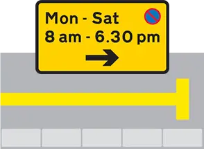
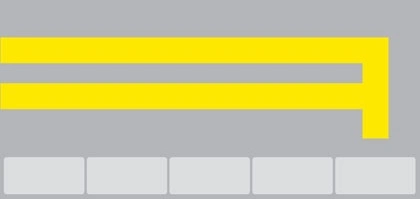
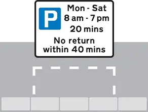
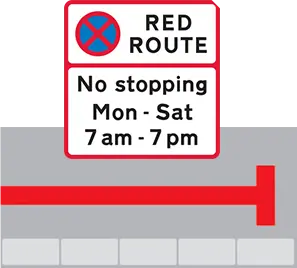
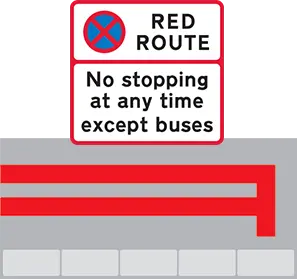
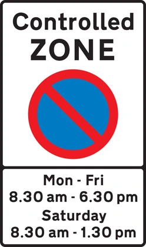
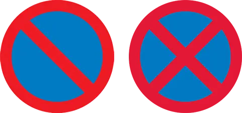
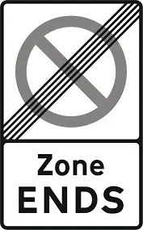
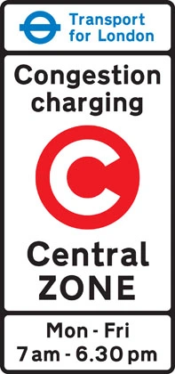
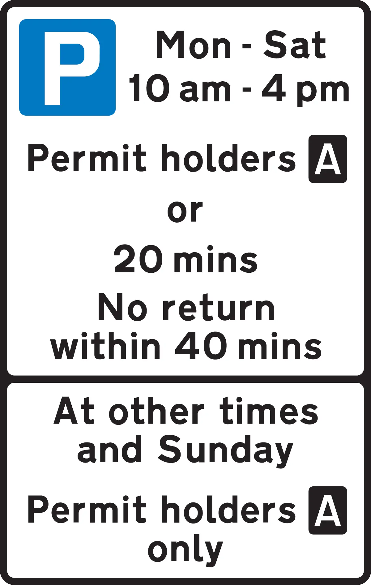

Parking in the UK shouldn't be a guessing game. Yet a discount of UK drivers find parking signs confusing, according to a Confused.com survey—and one wrong decision can cost you £70 to £160 or more. From yellow lines to red lines, controlled zones to regional variations, the rules aren't always intuitive.
This guide decodes every parking sign and restriction you'll encounter on UK roads. Whether you're a new driver, visiting from abroad, or just want to refresh your knowledge, you'll learn what each marking means, where you can (and can't) park, and how to avoid costly fines.
Key Takeaways
- Single yellow lines allow parking only outside restricted times; double yellow lines mean no parking at any time (with rare exceptions)
- 48,000 private parking tickets are issued daily in the UK; London fines increased by £30 in April 2025, the first rise in 15 years
- Regional parking fines range from fines in most councils, up to £160 in London, with a discount discounts for early payment
- a discount of UK drivers admit to illegal parking to save time, yet one violation can result in fines ranging from fines,000 depending on the offense
Yellow Lines Explained: Understanding Time-Based Restrictions
In 2026, as many drivers contemplate pavement parking bans and tighter enforcement, yellow lines remain the most common parking restriction you'll encounter. Unlike red lines (which are absolute), yellow lines are time-dependent—meaning you can sometimes park there, depending on what the sign says.
The difference between a single and double yellow line is critical. A single yellow line allows parking outside the hours shown on the adjacent sign. A double yellow line, by contrast, means no parking at any time, period. Misinterpreting this distinction is why many drivers end up with citations.

Single Yellow Line
No stopping at the times indicated by the sign. If there is no sign, stopping is limited to 20 minutes.
- Blue badge holders: 3 hours
- Loading: 20 mins (40 mins commercial)
- Drop-off/pick-up: anytime

Double Yellow Line
No parking or stopping at any time, anywhere, in any circumstance.
- Blue badge holders
- Emergency vehicles
- Royal Mail delivery
Fine: £70–£160

Marked Box / Loading Zone
Parking space with time and permit restrictions indicated by nearby sign.
- Time restrictions during peak hours
- Permit holders only at certain times
- Loading zones: 20–30 min limit
Red Lines Explained: The Absolute No-Parking Zones
Red lines mean business. While yellow lines offer some flexibility based on time, red lines are absolute prohibitions with almost no exceptions.
If you see a red line, your only question should be: "Is there a blue badge exemption posted nearby?" Otherwise, don't park there.

Single Red Line
No stopping during times shown on the sign. Outside those times, stopping may be permitted.
Fine: £70–£130

Double Red Line
No stopping or parking at any time, any day, under any circumstances. The most restrictive marking on UK roads.
- Blue badge holders
- Emergency vehicles
Fine: £70–£160
Control Zones & Parking Signs: Reading the Complete Picture
Beyond colored lines, the UK uses a system of controlled parking zones (CPZs) and standardized signs to manage parking in city centers and residential areas. These zones are more complex than a simple line—they have entry points, exit points, and varying rules depending on your permit status.

Controlled Parking Zone (CPZ)
Indicated by a blue sign with white "P" and zone entry/exit markers.
- Mon-Fri, 8:30am–6:30pm: Permit or pay-and-display
- Sat, 8:30am–1:30pm: Same rules
- Sun & evenings: Usually unrestricted
Fine: £70–£130

No Waiting / No Stopping Signs
No Waiting (red X): You can drop off passengers but cannot wait. No Stopping (double X): No stopping at any time except loading.
Disabled Parking (Blue Badge)
Blue badge holders receive significant parking privileges.
- 3 hours on single yellow lines
- Free parking in most paid zones
- Access to designated disabled bays
⚠️ Does NOT override double yellows/red lines

Zone Ends / Parking Ends Sign
White sign with diagonal line indicating where parking restrictions end.

Congestion Charging Zone (London)
Special zone in central London requiring daily payment to enter.
- Operates Mon-Fri, 7am–10pm
- Daily charge: £15
- Parking fee ≠ congestion charge

Permit Holders Only
Only vehicles with a valid resident permit can park during restricted hours.
Fine: £70–£100
Regional Variations & Parking Fines in 2025-2026
Parking fines aren't uniform across the UK. In April 2025, London increased fines by £30 for the first time in 15 years, creating a significant gap between London and the rest of the country. Understanding regional costs helps you assess the real-world consequence of a parking mistake.
London: The Most Expensive Region
London's councils issue the most parking citations of any UK region—approximately 9.5 million PCNs (Parking Charge Notices) in 2024-25, a 13.a discount increase year-over-year.
London parking fine structure (April 2025 onwards):
| Violation Type | Higher Penalty | Lower Penalty | Early Payment Discount |
|---|---|---|---|
| Overstaying permit/pay-and-display | £160 | £110 | a discount (pay within 14 days) |
| Double yellow line parking | £160 | £110 | a discount |
| Bus lane violation | £160 | £110 | a discount |
| Disabled bay misuse | £160 | £110 | a discount |
Westminster issued the most citations in London in 2023-24 with 469,204 PCNs—more than 1,300 per day.
Rest of England: fines Range
Most English councils outside London operate under a lower penalty structure, ranging from fines with the same a discount early payment discounts.
Wales & Scotland
Welsh authorities typically impose fines in higher penalties, while Scottish councils have the lowest parking penalties (fines), both with a discount early payment discounts.
Private Parking: The Wild Card
Private land isn't governed by council rules. Private parking companies can issue their own charges—and they often do aggressively. 48,000 private parking tickets are issued daily in the UK (April-June 2025), with average fines ranging from fines.
Important: Private parking tickets are harder to dispute and escalate quickly if unpaid. Avoid private parking violations at all costs.
Common Parking Mistakes & How to Avoid Them
Understanding the rules intellectually is one thing; applying them in real time is another. Here are the five most common mistakes that result in fines—and how to avoid them.
Mistake 1: Parking on Double Yellow Lines
Why it happens: Drivers assume "just 5 minutes" won't result in a fine, or they misread a single yellow as a double.
The reality: Double yellow lines are enforced aggressively. Traffic wardens and automated cameras check constantly. You don't need to stay long to get a ticket.
Fine: fines depending on region.
Mistake 2: Parking Facing the Wrong Direction at Night
This rule surprises many drivers: parking facing oncoming traffic at night (30 minutes after sunset to 30 minutes before sunrise) is illegal under UK law and can result in a fine of up to £1,000.
Mistake 3: Overstaying a Permit Zone
a discount of UK drivers admit to illegal parking to save time. Overstaying a permit zone by even 5 minutes triggers an automated fine of fines.
Mistake 4: Misunderstanding Blue Badge Parking
Blue badges confer significant privileges, but they don't override all restrictions. They allow 3-hour parking on single yellows and free parking in paid zones—but not on double yellows or red lines.
Mistake 5: Ignoring Private Parking Lot Rules
Many drivers treat private parking as a free-for-all. It's not. Private parking operators can issue fines, clamp vehicles, escalate unpaid charges to debt collectors, and even sell debt to collection agencies.
How Curb Helps You Park with Confidence
Understanding parking rules is crucial, but applying them correctly in the moment is where drivers struggle. Parking signs can be ambiguous, partially obscured, or contradictory. You're standing on the street reading a confusing sign while traffic builds up behind you—and you're not sure if parking here will cost you £70 or £160.
That's where Curb comes in.
Curb's AI-powered parking sign analysis instantly scans any parking sign and tells you exactly what the rules are:
- What time restrictions apply
- Whether parking is allowed right now
- What the fine is if you violate the rule
- Whether blue badge exemptions apply
Instead of guessing or second-guessing, you get a clear verdict in seconds: "You can park here for 2 hours, Mon-Fri. You're OK right now." Or: "This is a permit-holder-only zone. Don't park here without a permit."
For drivers navigating unfamiliar streets, visiting new cities, or just wanting to eliminate parking anxiety, Curb removes the guesswork entirely.
Get Curb on the App Store
Download Curb and start scanning parking signs today.
Frequently Asked Questions
Yes, you can appeal within 28 days of receiving the notice. Common grounds include obscured or unclear signage, procedural errors, or disputed amounts. Submit your appeal to the council in writing with evidence. Success rates are high if the signage was genuinely unclear.
PCN (Parking Charge Notice) is issued by councils for violations of traffic regulations. FPN (Fixed Penalty Notice) is issued by police for moving traffic violations. Private parking charges are issued by private companies on private land. Appeal processes differ for each.
Blue badge rules are consistent across the UK—3-hour grace on single yellows, free parking in paid zones, access to disabled bays. However, pavement parking exemptions vary by council as new rules roll out in 2026. Check your local council website for specific exemptions.
Ignoring a PCN escalates the situation:
- Within 14 days: You can pay at a discount discount
- After 28 days: Full fine is due
- If unpaid: The council can register a charge against your vehicle, clamp it, or pursue legal action
- Legal consequences: Outstanding fines can result in County Court judgments, affecting your credit score
It depends on the sign. A single yellow line typically shows restricted hours (e.g., "Mon-Sat 8am-6pm"). If the sign says 8am-6pm, you can park outside those hours—including at night. However, always read the sign completely. Some single yellows have extended restrictions.
The Bottom Line: Know the Rules, Avoid the Fines
Parking in the UK doesn't have to be stressful. The rules are logical once you understand them: yellow lines are time-dependent, red lines are absolute, and regional fines vary but are often reducible by a discount if you pay within 14 days.
The key is to read every sign carefully before you park. If you're unsure, take a moment to verify. The 30 seconds you spend checking could save you fines and the hassle of appealing a fine.
And if you want instant clarity on any parking sign, download Curb. Whether you're in London, Manchester, Edinburgh, or Cardiff, Curb's AI analysis gives you the confident answer you need—instantly.
Download Your Free UK Parking Rules Cheat Sheet
Get a one-page reference guide with all UK parking signs, lines, zones, and fine amounts—perfect for printing or keeping on your phone.
Download the Free PDF